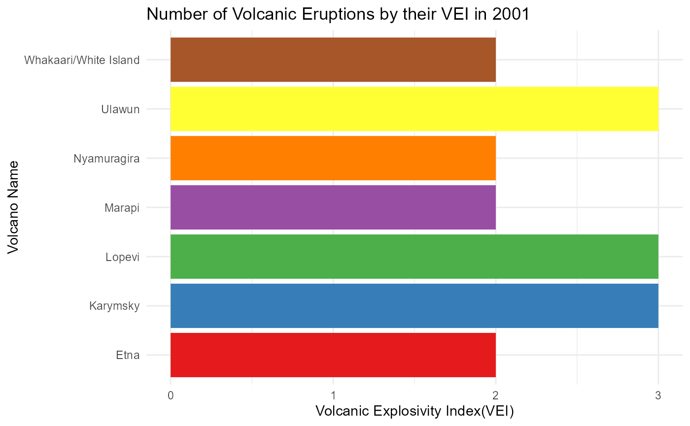

eruptR
eruptR.Rmd
library(eruptR)The data can be accessed by loading the eruptR package
and calling the functions using
eruptR::function_name(input).
The package contains the data of all the volcano types and its eruptions. The dataset contains information on the volcanoes’ eruptions. This information may include the start and end dates of the eruption, eruption classifications, and other eruption-related characteristics.
The collection contains information on a wide variety of volcanic types found across the world. Every kind of volcano may exhibit unique traits and behaviours, which are recorded in the dataset. The R package’s highlight is meant to analyse and comprehend volcanic explosivity trends. Users can use this function to query the dataset using volcano names and receive data linked to the Volcano Explosivity Index (VEI).
The functions used are described here:
fibonacci_sequence - A numerical function that takes a number as an input and it displays a Fibonacci series till that input number.
explosive_index - A nurmeric+categorical function that takes a year as an input and provides the corresponding volcano name along with its highest recorded Volcanic Explosivity Index (VEI) for that particular year.
volcanic_eruption_counts - A parameterized function that takes a input of a panel of a R Shiny function, namely a year. It provides a plot showing the relationship between the Volcanic Explosivity Index (VEI) and the names of volcanoes.
shiny_app - A function which launches a R-shiny app from the package.
Examples
- fibonacci_sequence -
fibonacci_series(10)
#> [1] 0 1 1 2 3 5 8 13 21 34- explosive_index -
explosive_index(2011)
#> # A tibble: 1 × 2
#> vei volcano_name
#> <dbl> <chr>
#> 1 5 Puyehue-Cordon Caulle- volcanic_eruption_counts -
volcanic_eruption_counts(2001)